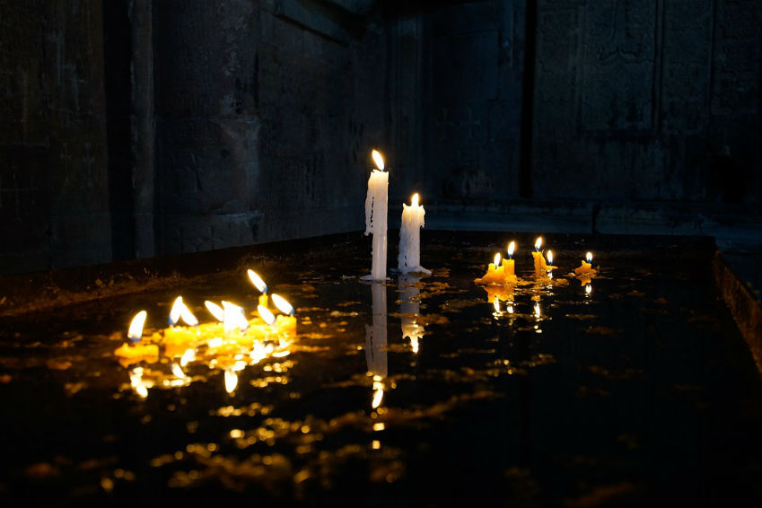
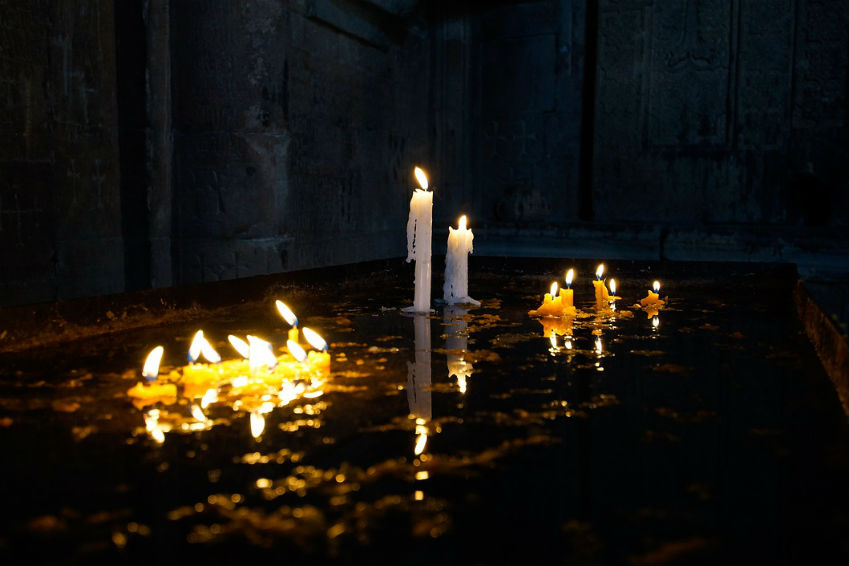

Candles throughout history
Candle making was developed independently in many places throughout history. Candle moulding machine in Indonesia circa Candles were made by the Romans beginning about These were true dipped candles and made from tallow. Evidence for candles made from whale fat in China dates back to the Qin Dynasty (221–206 BC). In India, wax from boiling cinnamon was used for temple candles. In parts of Europe, the Middle-East and Africa, where lamp oil made from olives was readily available, candle making remained unknown until the early middle-ages. Candles were primarily made from tallow and beeswax in ancient times, but have been made from spermaceti, purified animal fats (stearin) and paraffin wax in recent centuries.Antiquity
The early Greeks used candles to honour the goddess Artemis's birth on the sixth day of every lunar month. Romans began making true dipped candles from allow, beginning around 500 BC. While oil lamps were the most widely used source of illumination in Roman Italy, candles were common and regularly given as gifts during Saturnalia. The mausoleum of Qin Shi Huang 259–210 BC, contained candles made from whale fat. The word zhú was used as candle during the Warring States period 403–221 BC; some excavated bronzewares from that era feature a pricket thought to hold a candle. The Han Dynasty 202 BC to 220AD Jizhupian dictionary of about 40 BC hints at candles being made of beeswax, while the Book of Jin compiled in 648 covering the Jin Dynasty makes a solid reference to the beeswax candle in regards to its use by the statesman Zhou Yi. An excavated earthenware bowl from the 4th century AD, located at the Luoyang Museum, has a hollowed socket where traces of wax were found. Generally these Chinese candles were molded in paper tubes, using rolled rice paper for the wick, and wax from an indigenous insect that was combined with seeds.Wax from boiling cinnamon was used for temple candles in India. Yak butterwas used for candles in Tibet There is a fish called the eulachon or "candlefish", a type of smelt which is found from Oregon to Alaska. During the 1st century AD, indigenous people from this region used oil from this fish for illumination. A simple candle could be made by putting the dried fishon a forked stick and then lighting it.Middle Ages
After the collapse of the Roman empire, trading disruptions made olive oil, the most common fuel for oil lamps, unavailable throughout much of Europe. As a consequence, candles became more widely used. By contrast, in North Africa and the Middle East, candle-making remained relatively unknown due to the availability of olive oil. Candles were commonplace throughout Europe in the Middle Ages. Candle makers (known as chandlers) made candles from fats saved from the kitchen or sold their own candles from within their shops. The trade of the chandler is also recorded by the more picturesque name of "smeremongere", since they oversaw the manufacture of sauces, vinegar, soap and cheese. The popularity of candles is shown by their use in Candlemas and in Saint Lucy festivities.Tallow, fat from cows or sheep, became the standard material used in candles in Europe. The unpleasant smell of tallow candles is due to the glycerine they contain. The smell of the manufacturing process was so unpleasant that it was banned by ordinance in several European cities. Beeswax was discovered to be an excellent substance for candle production without the unpleasant odour, but remained restricted in usage for the rich and for churches and royal events, due to their great expense. In England and France, candle making had become a guild craft by the 13th century. The Tallow Chandlers Company of London was formed in about 1300 in London, and in 1456 was granted a coat of arms. The Wax Chandlers Company existed prior to 1330 and acquired its charter in 1484. By 1415, tallow candles were used in street lighting. The first candle mould comes from the 15th century in Paris.
The Modern Era
By the 19th century, candles were made on an industrial scale. This was to meet the demands of a growing population and better living conditions for the masses. The industrial-scale manufacture of candles was made possible thanks to the work of Joseph Morgan. A Manchester-based pewterer who patented a machine which allowed for the continuous production of moulded candles. Morgan’s machine could produce up to 1,500 candles per hour. This also saw the introduction of braided, rather than twisted, wicks. Which helped to produce better performing, self-trimming candles. 
